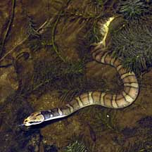
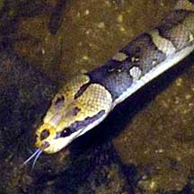
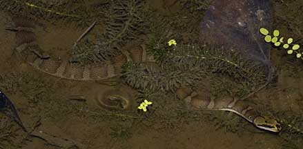

|
|
| snakes text index | photo index |
| Phylum Chordata > Subphylum Vertebrata > Class Reptilia > shore snakes |
| Puff-faced
water snake Homalopsis buccata Family Homalopsidae updated Oct 2016 Where seen? In a suitable freshwater habitat, they can be quite common. According to Baker, in Singapore, they are common in inland water bodies in rural areas and forests. However, they are only active at night. Elsewhere, they are found in rivers, swamps, canals and ponds. They are considered a pest on freshwater fish farms. Features: To about 1.2m long. It has a brown stripe through the eye that forms a kind of W-shaped dark mask around the head, and dark-edged brown bands on a paler brown body. The bands tend to be faded in adults which may be a uniform grey-brown, while juveniles have black bands on red, orange or white. Mildly venomous, it is a gentle snake and will not bite if it is left alone. What does it eat? It eats mainly fishes. Also frogs. Baby snakes: Mama snake gives birth to live young in litters of 2-20. Human uses: In Cambodia, this snake is heavily exploited and sold as food and for its skin in neighbouring countries such as Vietnam and China. Status and threats:This snake is listed as 'Vulnerable' on the Red List of threatened animals of Singapore. |
 Sungei Buloh Wetland Reserve, Aug 06  |
|
 Sungei Buloh Wetland Reserve, Aug 06 |
||
| Puff-faced water snakes on Singapore shores |
| Photos Puff-faced water snakes for free download from wildsingapore flickr |
| Distribution in Singapore on this wildsingapore flickr map |
Links
|
|
|